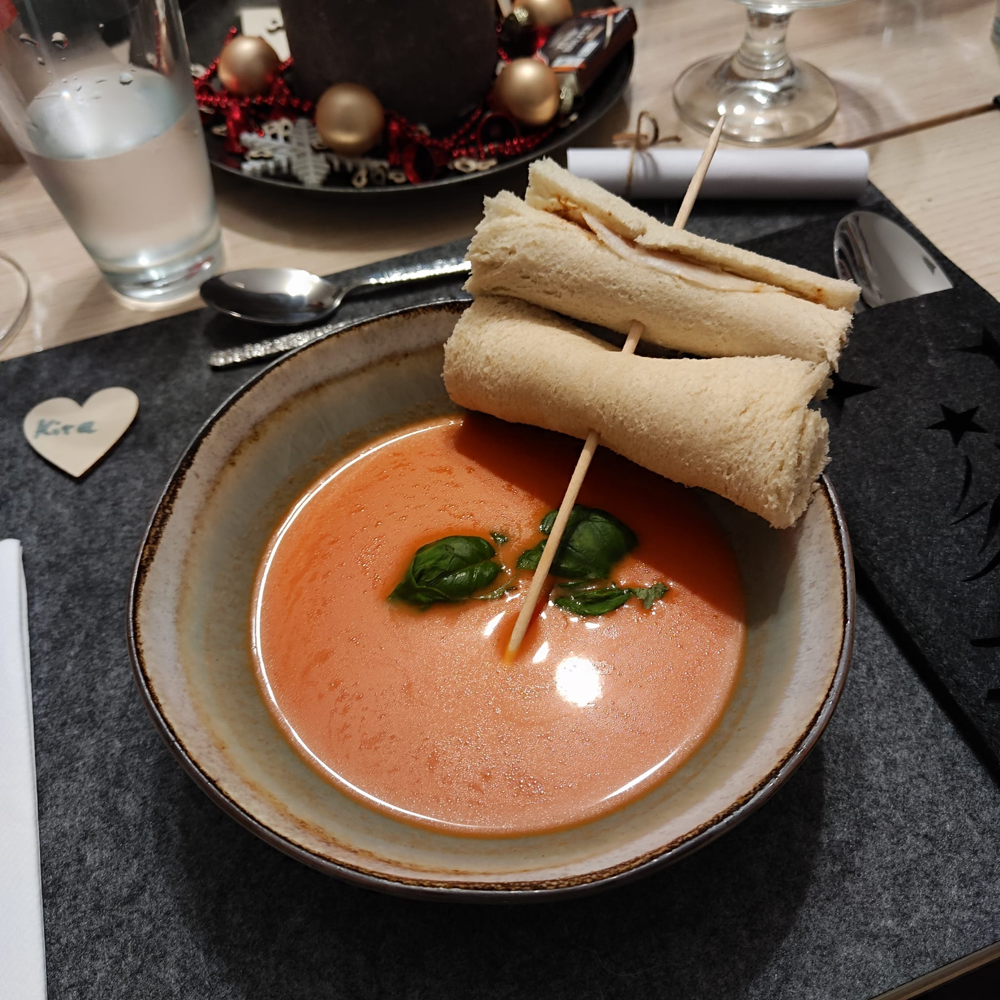

Kalte Tomaten-Melonen-Suppe
Suppe
Zutaten für 4 Personen
- 500 g Fleischtomaten
- 1 Wassermelone
- 50 ml Olivenöl
- 3 EL Himbeeressig
- 1 Zehe Knoblauch
- Chili
- Meersalz
- Pfeffer
- Paprikapulver
- Honig
Zubereitung
- Tomaten abspülen, halbieren und den Strunk entfernen. Melone schälen, entkernen und das Fruchtfleisch würfeln. Beides mithilfe eines Mixers zerkleinern.
- Olivenöl und Himbeeressig hinzugeben. Fein gehackte Knoblauchzehe hinzugeben. Mit den Gewürzen abschmecken
- Die Suppe durch ein Sieb passieren.
Tramezzini-Röllchen
Zutaten für 4 Personen
- 4 Scheiben Weißbrot
- 8 Scheiben Parmaschinken
- Frischkäse
Zubereitung
- Weißbrot mit einem Nudelholz flach ausrollen.
- Brotscheiben mit dem Frischkäse bestreichen und dem Parmaschinken belegen.
- Die belegten Brotscheiben einrollen
Anrichten
Zutaten für 4 Personen
- Tomaten-Melonen-Suppe
- Tramezzini-Schinken-Röllchen
- Holzspieße
- frischer Basilikum
Zubereitung
- Die Tramezzini-Schinken-Röllchen auf die Holzspieße stecken.
- Die Suppe auf Schüsseln verteilen und mit frischem Basilikum garnieren. Die Tramezzini-Schinken-Röllchen dazu reichen.
Zurück zur Übersicht